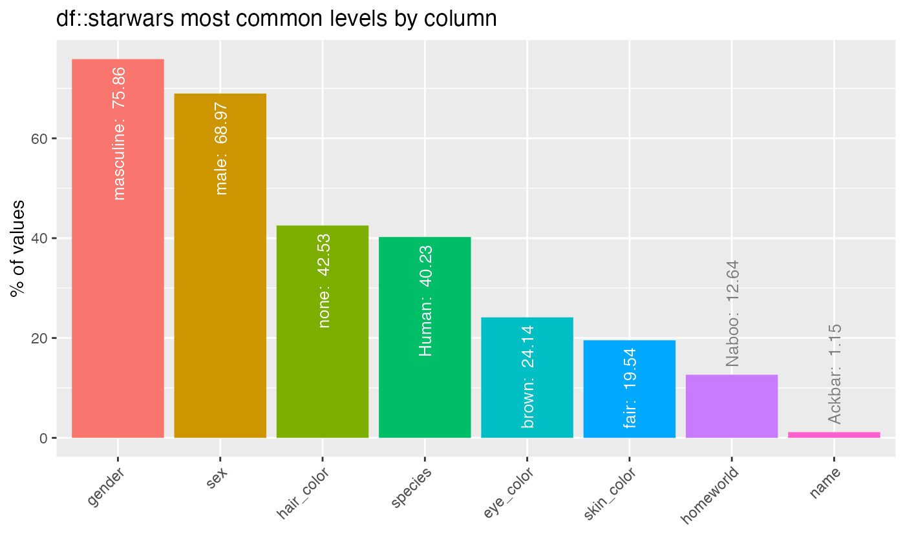

Easily visualise output from inspect_*() functions.
show_plot( x, text_labels = TRUE, alpha = 0.05, high_cardinality = 0, plot_layout = NULL, col_palette = 0, plot_type = 1, label_thresh = 0.1, label_angle = NULL, label_color = NULL, label_size = NULL )
Arguments
| x | Dataframe resulting from a call to an |
|---|---|
| text_labels | Boolean. Whether to show text annotation on plots. Defaults to |
| alpha | Alpha level for performing any significance tests. Defaults to 0.05. |
| high_cardinality | Minimum number of occurrences of category to be shown as a distinct segment
in the plot ( |
| plot_layout | Vector specifying the number of rows and columns
in the plotting grid. For example, 3 rows and 2 columns would be specified as
|
| col_palette | Integer indicating the colour palette to use:
|
| plot_type | Experimental. Integer determining plot type to print. Defaults to 1. |
| label_thresh | ( |
| label_angle | Numeric value specifying angle with which to rotate text annotation, if applicable. Defaults to 90 for most plots. |
| label_color | Character string or character vector specifying colors for text annotation, if applicable. Usually defaults to white and gray. |
| label_size | Numeric value specifying font size for text annotation, if applicable. |
Examples
# Load 'starwars' data data("starwars", package = "dplyr") # Horizontal bar plot for categorical column composition x <- inspect_cat(starwars) show_plot(x)# Bar plot of most frequent category for each categorical column x <- inspect_imb(starwars) show_plot(x)